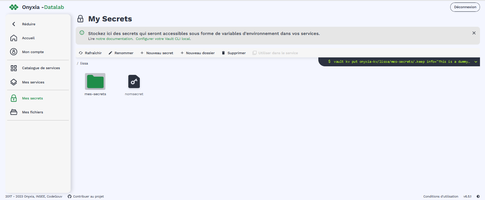

Configuration des services#
Nubonyxia met à la disposition des utilisateurs des services ainsi que des ressources en CPU et en RAM. Par exemple, pour les services data science comme RStudio ou Vscode, il est possible de réserver jusqu’à 30 000 milliCPU et 32Gi de RAM
Une fois un nouveau service lancé, il apparait dans l’onglet .
Au moment du lancement d’un service, en plus des ressources évoquées, différentes options de configurations sont possibles. Cette section s’attache à couvrir ces différentes options.
Important
Donner un nom personnalisé à son service permet de s’y retrouver lorsque l’on a plusieurs services RStudio ou VScode ouverts en parallèle.
Options de configurations#
Suivant le service lancé, différents onglets de configurations sont disponibles. Cette section présente les options les plus couramment utilisées.
La connection du service à son espace de stockage S3 est déjà configurée. On peut laisser tel quel cet onglet.
Pour pouvoir utiliser les commandes kubectl, il faut sélectionner le role admin. Par défaut, role est sur viewer. Cela peut être utile lorsque l’on souhaite par exemple vérifier l’état des pods. Consulter la section Commande pour debugger pour avoir un aperçu des commandes que vous pouvez exécuter.
Il est possible de fournir un script d’initialisation qui va s’exécuter à l’ouverture du service. Cela permet d’automatiser des configurations spécifiques d’un service.
PersonalInit: lien vers un script shell.
PersonalInitArgs: options correspondant aux variables
$1$2dans le script init
Par exemple, si PersonalInitArgs correspond à fichier1.txt fichier2.txt et que le script init soit le suivant:
#!/bin/bash
touch $1
touch $2
alors le script va créer les fichiers fichier1.txt et fichier2.txt grâce à la commande touch
Déplacer le curseur pour définir la plage de ressources souhaitée en termes de:
CPU
RAM
Warning
Les ressources du cluster étant mutualisées, il est de bon ton de réserver les ressources adaptées à ses besoins et à son cas d’usage.
Password : Il est possible de définir un mot de passe spécifique au service. Par défaut, il s’agit du mot de passe présent dans sous le paramètre Mot de passe pour vos services.
Enable IP Protection : à décocher pour être accessible par deux adresses IP différentes.
Enable Network Policy
Il est possible de partager de manière ponctuelle un service lancé à un autre agent. Pour ce faire, il faut décocher Enable IP protection et Enable network policy.
Important
L’utilisation simultannée d’un service est impossible. Une seule personne à la fois peut se connecter à un service.
Note
Dans le cas d’un partage de service, il est recommandé de définir un mot de passe propre au service que l’on souhaite partager dans Password.
Vault est le coffre fort de la plateforme. Si le service à lancer nécessite des variables d’environnement spécifiques, vous pouvez les injecter au service sans avoir à les écrire en clair dans votre code. La section Gestion des secrets montre comment créer un secret.
Une fois le secret crée et le chemin du secret copié dans le presse papier, il suffit de coller le chemin dans le champ afférent, soit dans Secret.
Pour vérifier que les variables ont bien été injectés dans le service, vous pouvez lancer les commandes suivantes dans un terminal:
# Lister toutes les variables d'environnement disponibles
env
# Afficher la valeur d'une variable d'environnement
echo $MA_VARIABLE
# Trouver toutes les variables d'environnement qui contiennent un pattern donné
env | grep -i "<PATTERN>"
Gestion des secrets#
La création et la gestion des variables environnements se fait dans la page Mes secrets. Cette page se présente comme un explorateur de fichiers, avec la possibilité de stoker identifiants, mots de passes et de trier les variables définies dans des dossiers comme le montre l’image ci-contre.
{kind=link}
Vous pouvez commencer par la création d’un dossier, suivie de la création d’un secret, ou bien créer directement votre secret:
+ Nouveau dossier+ Nouveau secret
Ensuite, cshaque secret peut contenir plusieurs variables, constituées de paires de clés-valeurs (voir l’image ci-après)
+ Ajouter une variable
{kind=link}
Note
Comme le montre l’image jointe, les clés commencent par $, contiennent uniqueement lettre, chiffres et le cra t!re _. Par convention les clés s’écrivent en majuscule.
Une fois le secret crée avec ces variables, pour pouvoir l’uiliser dans un service, cliquer sur le bouton Utiliser dans un service. La section Options de configurations montre ensuite comment configurer le service dans l’onglet Vault
Configurer le proxy#
Pour accéder à Internet, il faut recourir au proxy du SNUM. Des exemples de code sont inclus ci-dessous pour lancer une requète http sur Internet.
L’adresse IP du proxy est 172.16.0.53.
proxy_host <- "172.16.0.53"
proxy_port <- "3128"
url <- "http://example.com"
output_file <- "output.txt"
curl_command <- sprintf(
'curl -x %s:%s %s -o %s',
proxy_host, proxy_port, url, output_file
)
system(curl_command)
import requests
import os
PROXY = '172.16.0.53:3128'
proxies = { "http": PROXY,
"https": PROXY
}
URL='monURL'
AGENT = "Mozilla/5.0 (Windows NT 10.0; Win64; x64; rv:102.0) Gecko/20100101 Firefox/102.0"
session = requests.Session()
session.get_adapter("https://").proxy_manager_for(f"http://{PROXY}").proxy_headers["User-Agent"] = AGENT
session.proxies.update(proxies)
req = requests.Request("GET", URL)
preq = req.prepare()
r = session.send(preq)
print(r.content)
Le proxy peut s’employer lorsque l’on cherche à récupérer des données via API, comme le montre le notebook disponible sur ce repo git